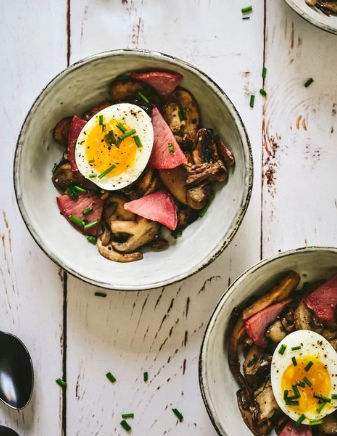

Oeufs mollets champignons bacon
Un plat à adapter avec les champignons de la saison...

- 4 personnes
- Préparation 10 min
- Cuisson 23 min
Ingrédients
- 4 tranches de bacon un peu épaisses
- 2 gousses d'ail
- 1 cuillère à café d'huile d'olive
- 20 g de beurre demi-sel
- 500 g de campignon mélangés émincés
- 4 oeufs
- sel, poivre
Préparation
- Préchauffez le four à 180 °C/th. 6
- Coupez chaque tranche de bacon en 8 morceaux. Disposez-les sur une plaque recouverte de papier cuisson, enfournez 10 mn, puis laissez refroidir.
- Épluchez, dégermez et émincez les gousses d’ail.
- Faites chauffer l’huile d’olive et le beurre dans une sauteuse sur feu vif. Dès que le beurre a fondu, ajoutez l’ail et laissez-le colorer. Ajoutez ensuite les champignons, salez, poivrez et laissez cuire environ 7 mn jusqu’à ce qu’ils soient dorés.
- Faites chauffer une casserole d’eau. À ébullition, ajoutez les œufs, laissez-les cuire 6 mn, puis écalez-les.
- Répartissez les champignons rôtis, les œufs mollets et les chips de bacon dans chaque assiette. Parsemez de ciboulette et servez.